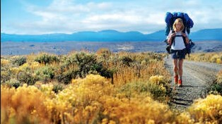

Dzika Droga, czyli wyprawa mojej Gusi!
Przez ponad pięćdziesiąt lat główny szlak, którym podróżowali kupcy i osadnicy ze wschodnich stanów USA do Kentucky. W 1775 roku Daniel Boone wytyczył ten szlak na zlecenie Transylvania Company z Fort Chiswell w Wirginii przez przełęcz Cumberland w głąb terytorium Kentucky. W okresie późniejszym droga została przedłużona, przechodząc w indiańskie szlaki wiodące do wodospadów Ohio i Louisville. Dzika Droga była wąska i nieutwardzona, dostępna jedynie dla pieszych i konnych wędrowców. Jednak mimo trudności była wykorzystywana przez tysiące podróżnych. W 1792 roku legislatura nowego stanu Kentucky zdecydowała się na poprawienie drogi. W 1796 roku nowa, szersza droga została udostępniona dla pojazdów dwuśladowych. Zainteresowanie nią zmniejszyło się po 1818, a porzucona została około 1840 roku, gdy zastąpiły ją nowocześniejsze drogi międzystanowe.PROSTO Z SERCA:
Ciągłe oczekiwanie: Tutaj więcej!

Samotna wyprawa bez ukochanego:
